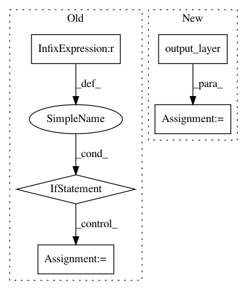

066ef66950b6729a1cde321364b368d2fc3a9e1b,texar/modules/decoders/transformer_decoders.py,TransformerDecoder,_build,#TransformerDecoder#Any#Any#Any#,104
Before Change
preds: [batch_size, target_length]
logits = None
if targets is not None:
decoder_self_attention_bias = (
attentions.attention_bias_lower_triangle(
layers.shape_list(targets)[1]))
decoder_self_attention_bias = tf.Print(decoder_self_attention_bias,
[tf.shape(decoder_self_attention_bias), decoder_self_attention_bias],
message="decoder self attention bias",
summarize=2048)
target_inputs = tf.nn.embedding_lookup(self._embedding, targets)
if self._hparams.multiply_embedding_mode == "sqrt_depth":
target_inputs = target_inputs * \
(self._embedding.shape.as_list()[-1]**0.5)
logits = self.decode(
target_inputs,
encoder_output,
encoder_decoder_attention_bias,
decoder_self_attention_bias,
)
preds = tf.to_int32(tf.argmax(logits, axis=-1))
return logits, preds
def dynamic_decode(self, encoder_output, encoder_decoder_attention_bias):
After Change
cache=None,
)
logits = self.output_layer(decoder_output)
preds = tf.to_int32(tf.argmax(logits, axis=-1))
return logits, preds
def dynamic_decode(self, encoder_output, encoder_decoder_attention_bias):
In pattern: SUPERPATTERN
Frequency: 3
Non-data size: 5
Instances
Project Name: asyml/texar
Commit Name: 066ef66950b6729a1cde321364b368d2fc3a9e1b
Time: 2018-04-28
Author: shore@pku.edu.cn
File Name: texar/modules/decoders/transformer_decoders.py
Class Name: TransformerDecoder
Method Name: _build
Project Name: OpenNMT/OpenNMT-tf
Commit Name: 8566b142ddf39eb999e6765a216d54c957f526a3
Time: 2019-04-01
Author: guillaume.klein@systrangroup.com
File Name: opennmt/models/sequence_classifier.py
Class Name: SequenceClassifier
Method Name: _call
Project Name: autonomio/talos
Commit Name: a5cf5911849412e56788324fddb989eec0d56978
Time: 2019-03-11
Author: mailme@mikkokotila.com
File Name: talos/commands/kerasmodel.py
Class Name: KerasModel
Method Name: _create_input_model